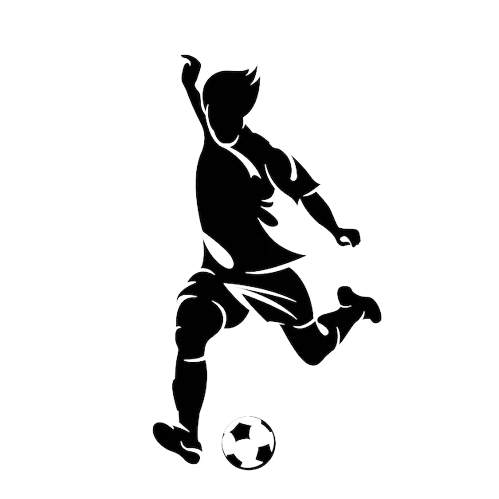
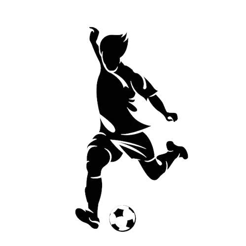

Nunca dejes de soñar
Querido Charles,
La vida que siempre quisiste
Es difícil expresar con palabras la emoción y el orgullo que sentimos al verte lograr tu sueño de convertirte en jugador profesional de fútbol. Desde que eras solo un niño, has mostrado una pasión y dedicación inigualables por este deporte, y hoy, ese esfuerzo ha dado sus frutos.
Desde los 7 años empezaste
Lo mirabas día y nocheA esta edad ya sabias que querias ser como el
El hecho de que hayas sido fichado para jugar en la primera división en Japón es un logro extraordinario, y estamos seguros de que representarás a nuestro país de la mejor manera posible. Sabemos que este es un momento emocionante para ti, pero también entendemos que tomar esta oportunidad significa despedirte de todo lo que conoces y amas. Sabemos que esta decisión no ha sido fácil para ti, pero queremos que sepas que te apoyamos incondicionalmente en este nuevo capítulo de tu vida. Estamos seguros de que esta experiencia en Japón te brindará oportunidades increíbles y te permitirá crecer como jugador y como persona. Recuerda siempre de dónde vienes y lleva contigo el espíritu y la determinación que te han llevado hasta aquí. Estamos ansiosos por seguir tu carrera y ver todas las cosas maravillosas que estás destinado a lograr.Nunca los olvides (cómo lo lograste)
- Donde iniciaste
- Te perdias horas jugando fútbol en el barrio
- Amabas salir del cole a jugar
- Club, aquel que amaremos por siempre
- No olvides tu disciplina
- Entrenar cada día
- Aplazar cosas que querias hacer por un entreno
 
 Tú yo grande